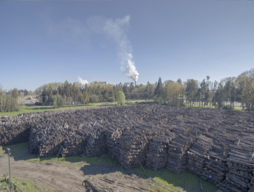
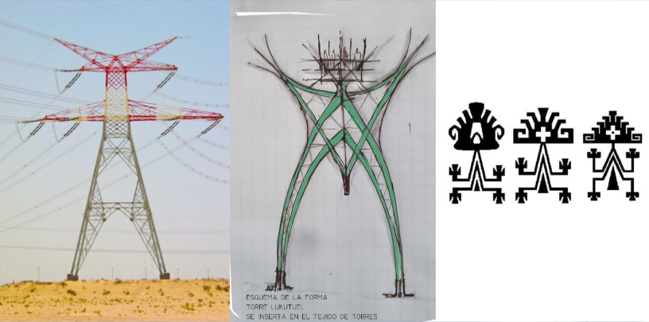
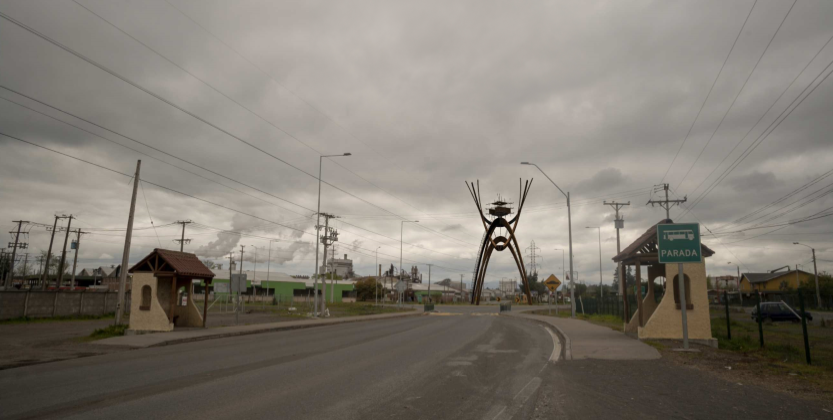
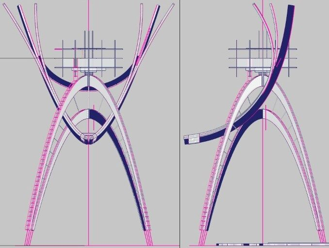
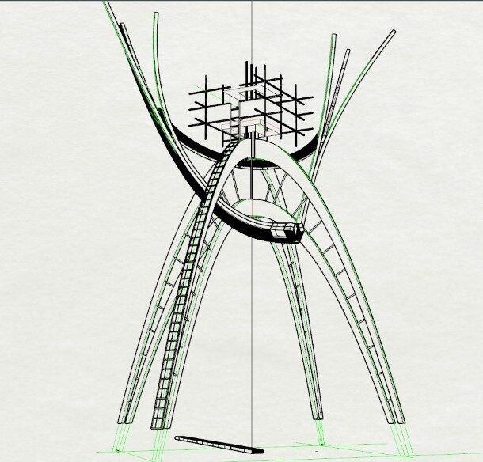
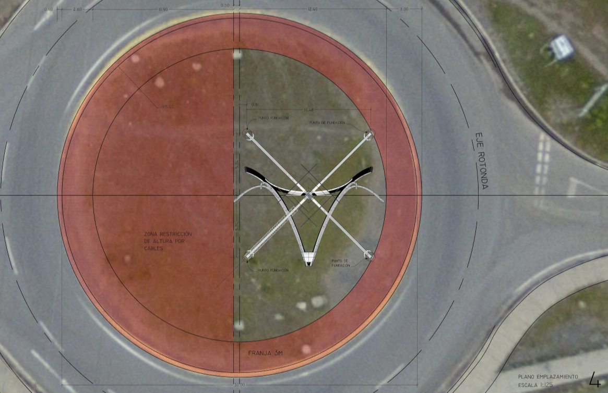

Proyecto Nº 003
Torre Lukutuel
Proyecto intervención de rotonda en Cholguán, Región de Ñuble. Madera laminada encolada unida por herrajes de fierro macizo. La estructura se basa en curvas catenarias con una distribución óptima de los esfuerzos hacia fundaciones puntuales de hormigón armado. En conjunto con Jorge Aguayo Riedl.







UbicaciónÑUBLE · BIOBÍO
37°10′S · 72°04′O